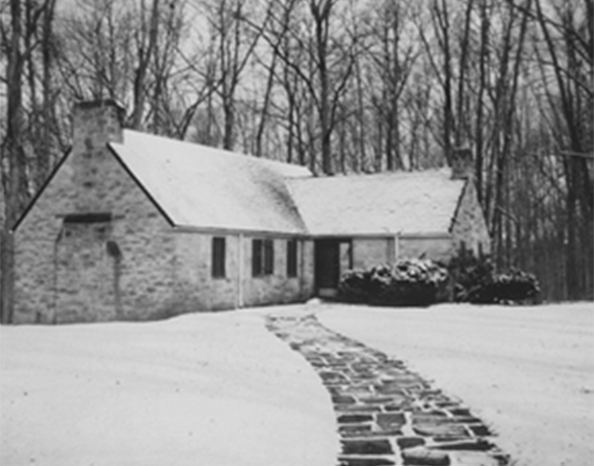

Chapter 13 on the roll
The Iota


- Position on the roll#13
- InstitutionKenyon College
- Chartered1860
- StatusInactive since 2010
- Coat of armsfull-size PDF
In the archive
Pages that name the Iota Chapter or its institution.
Named on 834 pages across 345 volumes of the archive.
…mbers, we have no evidence that they have lost in power or love for Psi U. The Iota Chapter, unrepresented at the 43d Convention, has exhibited new vigor and an ex cellent fraternity spirit. From one of our oldest and 'most revered Chapters…
Page13…nt encouragement to make every issue eight paged is its greatest need. 11. The Iota Chapter.� Its delegate will inform the Convention of its condition and embarrassments. If it could be placed in possession of $5,000 worth of real estate for…
Page15…g; correspondence to R^. J. A. Hayden, Lock Box 11, Rochester, N. Y. IOTA (Kenyon College i860).�Chapter Rooms, one mile East of College, Gambier; meets Saturday evening; correspondence to Mr. J. P. Coates, Box 159, Gambier, O. iW/ (Univer…
Page2….�Correspondence to Mr. J. A. Hayden, Lock Box 11, Rochester, N. Y. 10 TA (Kenyon College i860).�Correspondence to Mr. J. P. Coates, Box 159, Gambier, O. PHI (University of Michigan 1865).�Coirespondence to Mr. J. H. Raymond, Lock Box 96,…
Page8…).�Correspondence to Mr. J. A. Hayden, Lock Box ii, Rochester, N. Y. IOTA (Kenyon College i860).�Correspondence to Mr. J. P. Coates, Box 159, Gambier, O. PHI (University of Michigan 1865).�Coirespondence to Mr. J. H. Raymond, Lock Box 96,…
Page2…).�Correspondence to Mr. J. A. Hayden, Lock Box 11, Rochester, N. Y. IOTA (Kenyon College i860).�Correspondence to Mr. J. P. Coates, Box 159, Gambier, O. PHI (University of Michigan 1865).�Coirespondence to Mr. J. H. Raymond, Lock Box 96,…
Page8…858).�Correspondence to Mr. B. S. Day, Lock Box 11, Rochester, N. Y. IOTA (Kenyon College 1860).^� Correspondence to Mr. F. G. Hillard, Box 60, Gambier, Ohio. PHI (University of Michigan 1865).� Correspondence to Mr. S. R. Smith, Lock Box…
Page4…58).� Correspondence to Mr. B. S. Day, Lock Box 11, Rochester, N. Y. IOTA (Kenyon College i860).�Correspondence to Mr. F. G. Wil lard, Box 60, Gambier, Ohio. PHI (University of Michigan 1865).� Correspondence to Mr. S. R. Smith, Lock Box 1…
Page8…Correspondence to Mr. Frank W. Kelsey, box 430, Rochester, N. Y. 13. IOTA (Kenyon College I860).�Correspondence to Mr. C. P. Peterman, Gambier, Ohio. 14. PHI, (University of Michigan 1865).�Correspondence to Mr. E. S. Sherrill, Lock Box 17…
Page16….� Correspondence to Mr. B. F. Miles, box 503, Rochester,, N. Y. 13. IOTA (Kenyon College, I860).�Correspondence to Mr. C. S. Hamilton, Kenyon College, Gambier, Ohio.. 14. PHI (University of Michigan, 1865).� Corres pondence to Mr. A. B. H…
Page8…).� Correspondence to Mr. B. F. Miles, box 503, Rochester, N. Y. 13. IOTA (Kenyon College, I860),�Coriespondence to Mr. C. S. Hamilton, Kenyon College, Gambier, Ohio. 14. PHI (University of Michigan, 1865).� Corres pondence to Mr. A. B. Ha…
Page8…HE DIAMOND. We have recently had the Chapter incorporated under the name " Iota Chapter of the Psi Upsilon Fraternity," and are now prepared to hold real estate and go on with our Chapter house as fast as our means will admit. Knowing th…
…arry N. Hills, rector of Milnor and Delano Hall, the preparatory school of Kenyon College, was married on Aug. 15 th last, to Miss Fannie McCullough, at Delaware, O. '80. William D. Hamilton is at Columbus, Ohio, where he is surgeon-in-chi…
…ernity overstepped the boundaries of New York, and chartered a chapter at, Kenyon College in Ohio. The pe titioners especially active were Robert McNeilly, M, D,, and the Rev. Erasmus Owen Simpson; and they were greatly assisted in their e…
Page67…o Upsilon Chapter, Box 502. lOTA (Kenyon College, i860) Corres pondence to Iota Chapter of Psi Upsilon, Kenyon College, Gambler, Ohio. Phi (University of Michigan, 1865) Correspondence to Phi Chapter of Psi Upsilon, University of Michiga…
Page13…o Upsilon Chapter, Box 502. Iota (Kenyon College^ i860) Corres pondence to Iota Chapter of Psi Upsilon, Kenyon College, Gambler, Ohio. Phi (University of Michigan, 1865) Correspondence to Phi Chapter of Psi Upsilon, University of Michiga…
Page17…o Upsilon Chapter, Box 502. Iota (Kenyon College, i860) Corres pondence to Iota Chapter of Psi Upsilon, Kenyon CoUege, Gambler, Ohio. Phi (University of Michigan, 1865) Correspondence to Phi Chapter of Psi Upsilon, University of Michigan…
Page13…sity of Rochester, 1858) Correspondence to Upsilon Chapter, Box 502. Iota (Kenyon College, i860) Corres pondence to iota Chapter of Psi Upsilon, Kenyon College, Gambier, Ohio. Phi (University of Michigan, 1865) Correspondence to Phi Chapte…
Page13…23, 1859. Convention held with the Zeta (Dartmouth) Chapter . July, i860. The Iota Chapter established in Kenyon College . . . Nov. 24, i860. Fourth song-book issued March 4, 1861. Convention held with the Beta (Yale) Chapter .... July 24,…
…r and a copy of the Con stitution be issued by the Executive CouncU to the Iota Chapter to replace those destroyed by fire. No. VI.� Resolved &e., that it be and hereby is referred to the Execu tive CouncU to select the Chapter with whic…
Page9…etown, Conn. UPSILON ...Rochester University.. -. Rochester, N. Y. IOTA �. Kenyon College ..Gambier, O. PHI University of Michigan Ann Arbor, Mich. PI Syracuse University . .. Syracuse, N. Y. CHI Cornell University .Ithaca, N. Y. B^TA-BETA…
Page130…eral Convention OF THE Psi Upsilon Fraternity, HELD WITH THE IOTA CHAPTER, kenyon college, Gambier, Ohio. At Columbus, Ohio, Thursday and Friday, May 10th and 11th, 1888. No. XVII of the Printed Series, PRINTED BY THE EXECUTIVE COUNCIL. Th…
…t concerning the new Song-book : At the Convention held last year with the Iota Chapter this resolution was passed : "Resolved, That the Executive Council be authorized to nominat ta chapter from which shaU be chosen a chairman of a comm…
Page23…9 65 Printing Records, Convention of 1889 70 00 Engrossing new Charter for Iota Chapter 25 00 Expressage on catalogues ; 40 48 Stationery and Miscellaneous Printing 18 65 Postage, Telegrams and Messenger Service 16 90 P. O. Box Rent 16 0…
Page16…for the Convention of 1867, held in Cincinnati, under the auspices of the Iota Chapter. GREETING SONG. [Page 81.] Written for, and first sung at the laying of the comer-stone of the Chi Chapter-house, May 8, 1884. (See The Diamond, June…
Page251…rd College. The University of Rochester was brought into the fold in 1858, Kenyon College in i860, the University of Michigan in 1865, the University of Chicago in 1869, Syracuse University in 1875, Cornell University in 1876, Trinity Coll…
…d successful reunion of the Chapter was h^ld June i8 and 19, 1895. Iota. � Kenyon College. The Iota passed the thirtyfifth year of its life under the active guardianship of six men; one Senior; two Juniors, one Sophomore and two Freshmen.…
…ed, Mr Lee Jasper Rowley, '98, of Avon, N. Y. , has been admitted. Iota. � Kenyon College. lota's initation took place October 4. Then were initiated Wallace H. Watts, '99, of Jamestown, N. Y., and Leo W. Wertheimer, '99, Middleport, Ohio.…
Page31…eta), and several graduate and undergraduate members of the chapter. Iota� Kenyon College. Mr. Russell R. Taylor, '99, of Saugatuck, Mich. , has been initiated by the Iota. Phi� University of Michigan. On the evening of Jan. 18, Mr. Richar…
…ha if it would not be regarded as too pre sumptuous. Justus Smith. Iota, � Kenyon College, Though numbering only five men, the Iota is strong in the love of its alumni and in the harmony that exists be tween its undergraduates. With the in…
Page45…7, Rochester, N. Y. George B. Williams, '97, Rochester, N. Y. IOTA CHAPTER KENYON COLLEGE. Charles Talford Mayo, '68, Detroit, Mich. Charles Atwater Ricks, '91, Cleveland, Ohio. Charles Rowland (^ary, '96, Detroit, Mich. Joseph Wadsworth H…
Page32…mbled at Madison, Wisconsin, May 11th to 13th, 1904, sends greeting to the Iota Chapter of Chi Psi Fraternity, and extends thanks for the smoker and entertainment given to the members of this Convention and Fraternity on the afternoon of…
Page11…tes of yesterday's proceedings were read and approved. A telegram from the Iota Chapter was read by the Recorder, stating that delegates were unavoidably detained, and that explanation by letter would follow. The Phi Chapter, through its…
Page9…Phelps, Beta '60, afterwards Minister to Aus tria, the Iota was placed in Kenyon College. By this action our Fraternity overstepped, for m the first time, the boundaries of New England and New York. Phi, the fourteenth chapter, having bee…
…nvention to meet with the Sigma Bro. Wertheimer (lota '99) stated that the Iota Chapter in celebrating its fiftieth anniversary wished to have the Convention in 1910. It was voted that the meeting place of the Convention of 1909 be selec…
Page10…submitted a resolution that the Annual Convention of 1910 be held with the Iota Chapter. Adopted (General Resolution No. 2). The Committee presented a letter from The Hoover and Smith Com pany of Philadelphia, Pa., addressed to the Conve…
…OF THE CONVENTION op THE Psi Upsilon Fraternity HELD WITH THE IOTA CHAPTER KENYON COLLEGE GAMBIER, OHIO May 12 and 13, 1910 No. XXXIX of the Printed Series PUBLISHED BY THE EXECUTIVE COUNCIL The Seventy-seventh Year of the Fraternity 1910
5 By unanimous consent the deUnquency of the Iota Chapter reported in the Annual Communication was waived. The Chair appointed the following Committees: To Nominate Members of the Executive Council � Bros.…
…e UPSILON � University of Rochester 41 Prince St., Rochester, N. Y. IOTA � Kenyon College Gambler, Ohio. PHI � University of Michigan 702 So. University Ave., Ann Arbor, Mich. OMEGA � University of Chicago 5639 University Ave., Chicago, 11…
…SILON � University of Rochester . . 41 Prince St., Rochester, N. Y. IOTA � Kenyon College Gambler, Ohio PHI � University of Michigan 702 So. University Ave., Ann Arbor, Mich. OMEGA � University of Chicago 5639 University Ave., Chicago, 111…
…SILON � University of Rochester . . 41 Prince St., Rochester, N. Y. IOTA � Kenyon College Gambler, Ohio PHI � University of Michigan 702 So. University Ave., Ann Arbor, Mich. OMEGA � University of Chicago 5639 University Ave., Chicago, 111…
…SILON � University of Rochester . . 41 Prince St., Rochester, N. Y. IOTA � Kenyon College Gambler, Ohio PHI � University of Michigan 702 So. University Ave., Ann Arbor, Mich. OMEGA � University of Chicago 5639 University Ave., Chicago, 111…
…e UPSILON� ^University of Rochester 41 Prince St., Rochester, N. Y. IOTA� ^Kenyon College Gambier, Ohio PHI� ^University of Michigan 702 So. University Ave., Ann Arbor, Mich. OMEGA� University of Chicago 5639 University Ave., Chicago, 111.…
…ine College. Phi Beta Kappa. Asst. Prof, of Latin language and literature, Kenyon College� 63-64. Prof. 64-67; President Kenyon College, 67-68; Hobart College, 68-69; Superior Passionist Monastery and Pastor of their church, Buenos Ayres.…
…e UPSILON� University of Rochester. .41 Prince St., Rochester, N. Y. IOTA� Kenyon College Gambier, Ohio PHI� University op Michigan 702 So. University Ave., Ann Arbor, Mich. OMEGA� University of Chicago. . .5639 University Ave., Chicago, 1…
…e UPSILON� University of Rochester. .41 Prince St., Rochester, N. Y. IOTA� Kenyon College Gambier, Ohio PHI� University of Michigan 702 So. University Ave., Ann Arbor, Mich. OMEGA� University of Chicago. . . 5639 University Ave., Chicago,…
…ive UPSILON�University of Rochester. .41 Prince St., Rochester, N. Y. IOTA�Kenyon College Gambier, Ohio PHI� University of Michigan 702 So. University Ave., Ann Arbor, Mich. OMEGA�University of Chicago. . .5639 University Ave., Chicago, IU…
…Upsilon UPSILON� University of Rochester No communication received. IOTA� ^Kenyon College AFTER weathering the mid-semester ex ams in great style, the Iota is taking it easy � feet on the desk� glowing pipe� and that delightful brand of go…
Page52…ive UPSILON�University of Rochester. .41 Prince St., Rochester, N. Y. IOTA�Kenyon College Gambier, Ohio PHI�University of Michigan Ann Arbor, Mich. OMEGA�University of Chicago. . . 5639 University Ave., Chicago, IU. PI�Syracuse University…
…e UPSILON� University of Rochester. .41 Prince St., Rochester, N. Y. IOTA� Kenyon College Gambler, Ohio PHI� University of Michigan Ann Arbor, Mich. OMEGA� UisnvBRSiTY of Chicago. . .5639 University Ave., Chicago, 111. PI� Syracuse Univers…
…e UPSILON� University of Rochester. .41 Prince St., Rochester, N. Y. IOTA� Kenyon College Gambier, Ohio PHI� University of Michigan Ann Arbor, Mich. OMEGA� Untvtersity of Chicago. . . 5639 University Ave., Chicago, 111. PI� Syracuse Univer…
…e UPSILON� University of Rochester. .41 Prince St., Rochester, N. Y. IOTA� Kenyon College Gambier, Ohio PHI� Uiwversity of Michigan Ann Arbor, Mich. OMEGA� University of Chicago. . .5639 University Ave., Chicago, 111. PI� Syracuse Universi…
…me the seventy Iota Alumni who have stated their intention to return IOTA� Kenyon College
Page61…e UPSILON� University of Rochester. .41 Prince St., Rochester, N. Y. IOTA� Kenyon College Gambier, Ohio PHI� University of Michigan Ann Arbor, Mich. OMEGA� University of Chicago. . . 5639 University Ave., Chicago, 111. PI� Syracuse Univers…
…ive UPSILON� University of Rochester 41 Prince St., Rochester, N. Y. IOTA� Kenyon College Gambier, Ohio PHI� University of Michigan Ann Arbor, Mich. OMEGA� University of Chicago 5639 University Ave., Chicago, IU. PI� Syracuse University 10…
…ve UPSILON� ^University of Rochester 41 Prince St., Rochester, N. Y. IOTA� Kenyon College Gambier, Ohio PHI� ^University of Michigan Ann Arbor, Mich. OMEGA� ^University of Chicago 5639 University Ave., Chicago, 111. PI� Syracuse University…
…ive UPSILON� University op Rochester 41 Prince St., Rochester, N. Y. IOTA� Kenyon College Gambier, Ohio PHI� ^University of Michigan Ann Arbor, Mich. 0MEG.\� ^University of Chicago 5639 University Ave., Chicago, 111. PI� Syracuse Universit…
…tive UPSILON�University of Rochester 41 Prince St., Rochester, N. Y. IOTA� Kenyon College. Gambier, Ohio PHI� Univrsity of Michigan Ann Arbor, Mich. OMEGA�University of Chicago 5639 University Ave., Chicago, 111. PI�Syracuse University 101…
…ive UPSILON� University of Rochester 41 Prince St., Rochester, N. Y. IOTA� Kenyon College .Gambier, Ohio PHI�University of Michigan 1000 HUl St., Ann Arbor, Mich. OMEGA� Univeesity of Chicago 5639 University Ave., Chicago, IlL PI� Sybaouse…
…ive UPSILON� Univeesity op Rochesteb 41 Prince St., Rochester, N. Y. IOTA� Kenyon College Gambier, Ohio PHI� Univeesity of Michigan 1000 Hill St., Ann Arbor, Mich. OMEGA� Univeesity of Chicago 5639 University Ave., Chicago, IlL PI� Syeacus…
…ive UPSILON� Univeesity of Rochesteb 41 Prince St., Rochester, N. Y. IOTA� Kenyon College Gambler, Ohio PHI� ^Univeesity of Michigan 1000 HIU St., Ann Arbor, Mich. OMEGA� Univeesitt of Chicago 5639 University Ave., Chicago, IlL PI� Syeaous…
…ve UPSILON� Univeesity of Rochesteb 41 Prince St., Rochester, N. Y, IOTA� ^Kenyon College Gambler, Ohio PHI� Univeesity off Michigan 1000 Hill St., Ann Arbor, Mich. OMEGA� Univeesity of Chicago 5639 University Ave., Chicago, IlL PI� Syeaou…
…ive UPSILON� Universitt of Rochester 41 Prince St., Rochester, N. Y. IOTA� Kenyon College Gambler, Ohio PHI�University of Michigan 1000 Hill St., Ann Arbor, Mich. OMEGA� University of Chicago 5639 University Ave., Chicago. IlL PI�Syracuse…
…tive UPSILON�Unitebsitt of Roohestee 41 Prince St., Rochester, N. Y, IOTA� Kenyon College Gambler, Ohio PHI�Unitbesitt of Michigan 1000 Hill St., Ann Arbor, Mich. OMEGA� Univeesity of Chicago 5639 Univeraity Ave., Chicago, lUPI�Sybacuse Un…
…ive UPSILON� Univeesity of Rochester 41 Prince St., Rochester, N. Y. IOTA� Kenyon College Gambier, Ohio PHI� 'University of Michigan 1000 Hill St., Ann Arbor, Mich. OMEGA� University of Chicago 5639 University Ave., Chicago, 111. PI� Syrac…
…ive UPSILON� Univebsitt of Rochestee 41 Prince St., Rochester, N. Y. IOTA� Kenyon College Gambier, Ohio PHI� 'Univeesity of Michigan 1000 Hill St., Ann Arbor, Mich. OMEGA� Univeesity of Chicago 5639 University Ave., Chicago, 111. PI� Sybac…
…vantages of Psi U. We have, therefore, the largest pledge delegation IOTA� Kenyon College
…rsity but two years before gradua tion. Bill had taken two years' study in Kenyon College, The Eichel berger brothers seem to have made good as college newspapermen. Strangely enough, they all had the same hobby, too. All liked socialservi…
…7 Delta Kappa Epsilon 1.1004 18 Sigma Chi 1.071 19 Phi Beta Delta 1.038 20 KENYON COLLEGE For the college year 1926-27, Psi Upsilon ranked sixth among six fraternities. No accurate record is at hand giving full details but the other frater…
…t year. UPSILON� University of Rochester (No communication received) IOTA� Kenyon College
…ooklyn, N. Y. From the Class of 1931 Horace A. Kelly Brooklyn, N. Y. IOTA� Kenyon College Glass of 1930 John V. Cuff Napoleon, Ohio John Ogden Herron 3529 Vista Ave., Cincinnati, Ohio Class of 1931 Walter Albert Besecke, Jr 107 High Drive,…
…y aftemoon directing with a heavy hand the labors of his assistants. IOTA� Kenyon College
…d very welcome visitor at the house. Henry Martens, Associate Editor IOTA� Kenyon College THIS period from the end of the first semester until Spring Vacation is probably the most dull and trying period of the college year. It is always lo…
…rother Guy D. Goff, Senator from the State of West Virginia, member of the Iota Chapter in the class of '88, to rise. (Applause) Then Brother Frederick C. Walcott, Senator from the State of Connecti cut, of the Beta Chapter in the class…
…Schultz, Jr East Orange, N. J. Robert Trueman Sperry Belmont, Mass. IOTA� Kenyon College Class of 1933 Gn.BERT Kenyon Cooper, Jr Riverside, III. Robert Alan Cowdery Geneva, Ohio Robert A. Foster Toledo, Ohio Bruce Irving Gheen Cleveland H…
…ctive UPSILON�Universfty of Rochester 41 Prince St., Rochester, N. Y. IOTA�Kenyon College Gambier, Ohio PHI�University of Michigan 1000 Hill St., Ann Arbor, Mich. OMEGA� University of Chicago 5639 University Ave., Chicago, III. PI�Syracuse…
Page51…n taken into the Bonds were: Robert Alan Cowdery, Geneva, Ohio, John IOTA� Kenyon College
…. In 1860 William Walker Phelps, Beta '60 just out of college, founded the Iota Chapter at Kenyon College. The next founder was Andrew D.
…representatives of each fraternity on the campus in addition to the entire Iota Chapter went to Cincinnati for the funeral. Jim was the only son of Brother Arthur James Larmon, Iota '06, who died a year ago. He is survived by his mother…
…ago the late Lord Kenyon came from England and attended the centennial of Kenyon College at Gambier. He was so impressed with the activities in the Iota, both as leaders in college affairs and in ailumni affairs, that when he returned to…
…w, Mrs. Marguerite Armstrong who likewise has been an active friend to the Iota Chapter, we extend our deepest sympathy. Egbert Horace Allis, Zeta '91 Egbert Horace Allis, a member of the class during freshman year, died at his home in R…
…representatives of each fraternity on the campus in addition to the entire Iota Chapter went to Cincinnati for the funeral. Jim was the only son of Brother Arthur James Larmon, Iota '06, who died a year ago. He is survived by his mother…
…ederic Smyth Crestwood, N. Y. James Anderson Sutton Philadelphia, Pa. IOTA�Kenyon College Class of 1935 Jack Critchfield Shreve, Ohio Paul Elder Pittsburgh, Pa. Robert Langford Ann Arbor, Mich. Robert Rowe Toledo, Ohio Edgar Wertheimer, Jr…
…University) Inactive UPSILON�University of Rochester Rochester, N. Y, IOTA�Kenyon College Gambier, Ohio PHI� Universfty of Michigan 1000 HUl St., Ann Arbor, Mich. OMEGA� University of Chicago 5639 University Ave., Chicago, III. PI� Syracus…
Page70…nshine, doing ab solutely nothing. Portek M. Ramsay Associate Editor IOTA� Kenyon College SINCE the last Dlamond communica tion in November the Iota has had a special initiation. The men enter ing the bonds were Bennett Schram of Jackson,…
…ll Simpson, Jr Louisville, Ky. Monroe Hamilton Sweet Ossining, N. Y. IOTA� Kenyon College William Beck Akron, Ohio Wilford H. Collins Akron, Ohio Henry L. Curtis Mt. Vernon, Ohio
…tes Senator from West Virginia from 1913 to 1919. Mr. Goff was educated at Kenyon College and at Harvard University. He received his law degree from the Harvard Law School in 1891 and began the practice of law in Boston, later returning to…
…Rochester, N. Y. William Goild McKennan, '86 Rochester, N. Y. IOTA CHAPTER�Kenyon College Charles Henry Browning, '68. Philadelphia, Pa. Charles Talford Mayo, '68 Detroit, Mich. Francis George Willard, '82 Topeka, Kansas. PHI CHAPTER�Unive…
…iversity) Inactive UPSILON� University of Rochester Rochester, N. Y. IOTA� Kenyon College Gambier, Ohio PHI� University of Michigan 1000 Hill St., Ann Arbor, Mich. OMEGA� University of Chicago 5639 University Ave., Chicago, III. PI� Syracu…
Page61THE DIAMOND OF PSI UPSILON 61 IOTA� Kenyon College N.R.A. � ^We do our part. Such is the slogem of the Iota as we find ourselves with one of the largest returning delegations in many yeeirs. Brother B…
…U. On to one hundred more. FratemaUy." The Upsilon Chapter Gambier, Ohio "The Iota Chapter joins with all Psi UpsUon's commemoration of its hundredth anniversary. May the spirit of Brotherly love and affection be ever present to guide us to…
…3000 braved threatening weather to witness the ceremony as Port Kenyon of Kenyon College and the Cummings School of Aeronautics were dedicated officially. The event marked the inauguration of a movement in aviation to make flying a practi…
…Y. William Randolph Weller Rochester, N. Y. John Wiegel Utica, N. Y. IOTA�Kenyon College Class of 1936 Carleton F. Taylor Toledo, Ohio Class of 1937 George M. Brown New Rochelle, N. Y. Paul L. Griffiths Sewickly, Pa. William A. Osborne Cl…
…ivebsity) Inactive UPSILON� Univebsity of Rochester Rochester, N. Y. IOTA� Kenyon College Gambier, Ohio. PHI� ^Univebsity of Michigan 1000 Hill St., Ann Arbor, Mich. OMEGA� ^Univebsity of Chicago 5639 University Ave., Chicago, III. PI� Syr…
Page42…nd of last semester and in a recent UPSILON� University of Rochester IOTA� Kenyon College
THE DIAMOND OF PSI UPSILON 207 IOTA� Kenyon College RETURNING from the 102nd an nual convention of Psi Upsilon, your associate editor found the Iota men talking, thinking, feefing, eating, betting, the…
…William M. Witherspoon '28 Leighton H. Forbes '04 Ernest L. White '02 IOTA�KENYON COLLEGE Angus W. Dun '80 Raymond T. Sawyer '00 Frederick W. Harnwell '89 George H. Smith '84 Philip T. Hummel '23 Henry Stanberry '96 William W. Peabody '86…
…active 1858 UPSILON � University of Rochester Rochester, N. Y. 1860 IOTA � Kenyon College Gambler, Ohio 1865 PHI � University of Michigan 1000 Hill St., Ann Arbor, Mich. 1869 OMEGA � University of Chicago 5639 University Ave., Chicago, 111…
Page253…No. 2. Resolved: That the 1937 Convention be held with the Iota Chapter at Kenyon College, Gambier, Ohio, and that if this Chapter can not be our hosts, the matter be referred back to the Executive Council for settlement. No. 3. Resolved:…
…gs. Brother Corcoran chal lenged the Psi Chapter to a "song Bout" with the Iota Chapter to be held at the next national convention. The Psi accepted. Upon several occasions Alumni of the Pi Chapter, overcome by the festive atmos phere, r…
…William E. Woodman Maplewood, N.J. James B. Woodruff Rochester, N.Y. IOTA� Kenyon College Class of 1939 Davis Gunn Chicago, 111. Arthur W. Kohler Ardmore, Pa. Class of 1940 Robert O. Cless St. Paul, Minn. John D. Crane Columbus, Ohio John…
…the Convention. No. 2. Resolved: That the 1938 Convention be held with the Iota Chapter at Kenyon College, Gambier, Ohio, and that if this Chapter cannot be our hosts, the matter be referred back to the Executive Council for settlement,…
…spects of the games, such as the double steal and sliding into home. IOTA� Kenyon College Although not enough snow has seen these parts lately to create a genuine Christmas atmosphere, the Iota is nevertheless aware that the holiday season…
…liam H. Rogers, undergraduates who know him, and is Associate Editor. IOTA Kenyon College The Iota is well advanced in the second semester of a very successful year, and the mid-year examinations were passed without the Chapter losing a si…
…e adjournment, the Convention decided to hold the 1938 Convention with the Iota Chapter, at Gambler, Ohio, Kenyon Col lege. It should be noted, in passing, that the oldest graduate of the Fraternity present, was Sidney E, Junkins, Zeta '…
DEDICATION OF THE NEW IOTA LODGE THE Iota Chapter did honor to its 77th year by dedicating a new Chapter Lodge on June 12th. Ground was broken in the late win ter months and construction was complete…
…OF THE PSI UPSILON FRATERNITY HELD UNDER THE AUSPICES OF THE IOTA CHAPTER KENYON COLLEGE GAMBIER, OHIO APRIL 18, 19 AND 20, 1938 NO, LXV OF THE PRINTED SERIES Published by THE EXECUTIVE COUNCIL THE ONE HUNDREDTH AND FIFTH YEAR OF THE FRAT…
…Archibald Douglas, Lambda '94 70 Psi Upsilon All-American Football Team 74 Iota Chapter Will Act as Host to the 1938 Convention 79 Advisory Committee on the Diamond 80 Psi Upsilon in the Foreign Service 81 Herbert S. Houston's Recent Tri…
…vens, Chi '99, by Benjamin T. Burton, Chi '21 131 Psi Upsilon Legacies 134 Kenyon College Host to 1938 Convention 137 Tentative Program for the Convention 142 Editorial Comment on the 1938 Convention 143 "Little Chi" Dinner 145 Songs of Ps…
…E EVENT THE 1938 Convention of Psi Upsilon was held with the Iota Chapter, Kenyon College, Gambler, Ohio, on Monday, Tuesday and Wednesday, April 18, 19, 20. Re ports have come in from all sides that the Convention was one of the most succ…
…us whose persuasiveness is irresistible. John Forbes Associate Editor IOTA Kenyon College At the last writing of The Diamond report, the Iota held but one class presidency. Now we find Pledge Brother Bothwell leading the
…n looking frantically for his left shoe. John Forbes Associate Editor IOTA Kenyon College This is the time of year that Gambier has little to offer in the way of news. Talk in and about the campus is primarily concerned with the mid-year e…
…'47, an eminent Episcopal clergy man, was active in the foundation of the Iota Chapter. He passed away in 1896. The Rev. Dr. Egbert Coffin Smyth, Kappa '48, was a leading professor at Andover. Accordmg to The Epitome (written in 1884) "…
…Ohio; C. Rich ard Wade, Glencoe, IU.; WiUiam Yates, Rochester, N. Y. IOTA Kenyon College Class of 1942: Marson Wilgus Pierce, Kalamazoo, Mich., son of Marson WUgus Pierce, Rho '12; Roger Sherman Manchester, Westport, Conn., son of Sherman…
…which will be held early in February. Edward T. Auer Associate Editor IOTA Kenyon College Shortly after the last Diamond re port was sent in, the annual fall dance took place. This is always the high spot in the autumn social life at Kenyo…
THE DIAMOND OF PSI UPSILON 177 IOTA Kenyon College The brothers have settled down to the second part of the school year with a new determination to make their grades shoot higher. The chapter came thr…
…, member of the Executive Council, has been nominated as alumni trustee of Kenyon College. He is the vice-president of the William F. Wholey Co., Inc., New York City and a present member of the Kenyon Alumni Council. He is a former preside…
…, one time Roman Catholic, Shattuck's new head helped work his way through Kenyon College by fiddling in a band, cut his missionary teeth in South Dakota's Rosebud Indian Reservation, where he had four white missions, two Indian, on his 11…
…ity of Rochester College Campus February 15, 1858 Rochester, New York Iota Kenyon College Gambier, Ohio November 24, 1860 Phi University of Michigan 1000 Hill Street January 26, 1865 Ann Arbor, Michigan Omega University of Chicago 5639 Uni…
Page18…d the first Episcopal Bishop of Ohio, was to become the home of the famous Iota Chapter. Built on a httle plateau, the "HiU" to aU Ken yon men, with the picturesque Kokosing River winding below, Ken yon is situated about fifty miles nort…
…ne of good wishes to Goldwin Smith, Chi '45; received President Peirce, of Kenyon College, who addressed the delegates; ap proved the report of Austin M. Poole, Delta '87, Treasurer; sent tele gram of greeting to President Wil ham H. Taft,…
…d and the rock chosen before the Theta Coatof-Arms was definitely adopted. Iota Chapter
…ew York; at laying of cornerstone. Phi Chapter House, January 31, 1925; at Iota Chapter Dedication of New Common Room, 1925; at Convention with Pi Chapter, May 8, 1925; at Max Mason, Rho '98, Dinner at Chicago, November 30, 1925; at Inst…
Page20…ternity overstepped the boundaries of New York, and chartered a chapter at Kenyon College in Ohio. The pe titioners especially active were Robert McNeilly, M. D., and the Rev. Erasmus Owen Simpson; and they were greatly assisted in their e…
…formed Church and an intimate personal friend, and Bishop Arthur S. Lloyd. Kenyon College bestowed upon Dr. Aldrich the degree of Doctor of Humane Letters, in 1937. He is chairman of the Church Congress and a life trustee of Princeton Uni…
…several alumni among those present. William B. Mason Associate Editor IOTA Kenyon College Midsemester elections, recently held at the Iota, have netted the chapter an exception ally outstanding group of officers for the cur rent semester.…
…ect to do better than ever next Fall. Robert B. Hill Associate Editor IOTA Kenyon College Rushing Because of the draft and the general stress of the times many of us have be come greatly concerned with the reduced enrollment which is expec…
…illustrious Ameri can converts. When only 27 he was appointed president of Kenyon College, but, be cause of the interference of the Bishop of Ohio, the young minister resigned at the end of the first year. He immediately was asked to assum…
…es, the best of Psi U luck. John Benson, Jr. Associate Editor IOTA CHAPTER Kenyon College The war has not yet greatly changed the complexion of college life here at Kenyon, but it portends a grim future for the college and for the Iota. Th…
…'42, Edward Schongalla, U. '43. Floyd Bliven Associate Editor IOTA CHAPTER Kenyon College Scholarship Throughout the past year the Iota has been making a sincere effort to better its scholastic average here at Kenyon, but Mid-semesters fou…
…d the deep appreciation of the University of Rochester and of the Library. Kenyon College Walter T. Collins, Iota '03, a trustee of Kenyon, and a member of the Executive Council since 1921, made the presenta tions. President Gordon K. Chal…
…ald M. Stuart, '43 U.S.A. U.S.N.R. U.S.A. U.S.A.A.C. U.S.A.A.C. U.S.A.A.C. Iota Chapter Ensign Bernard R. Baker, '36 U.S.N.R. Lt. N. B. Cuff, '33 U.S.A. Ensign William EUiott, '39 U.S.N. John B. EUis, '40 U.S.A. Lt. (j.g.) Robert A. Guli…
…ity of Rochester College Campus February 15, 1858 Rochester, New York Iota Kenyon College November 24, 1860 Gamhier, Ohio Phi University of Michigan 1000 Hill Street January 26, 1865 Ann Arbor, Michigan Omega University of Chicago 5639 Uni…
Page5…n will be back for another season. David H. Walworth Associate Editor IOTA Kenyon College In spite of the loss of several good men, and the consequent lack of Senior members. The Iota still manages to re tain her high position among the ot…
Page29…would close for the lack of Brethren. Albert J. Elias Associate Editw IOTA Kenyon College Thus far the Iota has managed to remain fairly intact, having escaped the ravages of the draft and military reserves for the past two months. However…
…im and of Brother Phil Porter, Iota '12, regarding the war problems of the Iota Chapter. He fur ther reported on the scholastic stand ing of the Rho Chapter and on certain recommendations for future pledging at the Beta Beta Chapter. Bro…
…ege which means so much to this family. Located only thirty miles from the Iota Chapter at Gambier, Newark is a convenient way station for brothers travelling east or west on the Pennsyl vania railroad. En route to the Iota con vention i…
…kansas bar since 1889, studied law in Cincinnati after his graduation from Kenyon College. Surviving him are a niece and a nephew. REV. CARROLL E. HARDING, D.D., Kappa '8 1 Rev. Carroll E. Harding, D.D., rector emeritus of Epiphany Church,…
…of Psi Upsilon. Yours in the bonds, Albert J. Ellas Associate Editor IOTA Kenyon College For many months the future of Psi Upsilon at Kenyon has appeared extremely favorable. Today we aren't altering our view; however, the coming Summer t…
…attended Rens selaer Polytechnic Institute for a vear, then transferred to Kenyon College. From there he enlisted as a naval avia tion cadet in 1941. He received his promotion to Captain last spring. LT. JULIAN HOWARD BURGESS, JR., Lambda…
…dred. At the present time, there are only seventy-eight civilian students. The Iota Chapter has nine active resident-members and these have maintained good scholarship and college leadership. Forty new students are expected this summer, and…
Page8…ontinuing to do so successfuUy. John B. Halsted, '47 Associate Editor IOTA Kenyon College The Iota chapter has tried to keep up many of the old traditions of the chapter itself and of Kenyon College; as many, that is, as are possible to be…
…pproved. The President reported that there were six active Brothers in the Iota Chapter at the end of the Summer term. He submitted a proposal to print in The Diamond a series of articles regarding Chapter-House management and ac countin…
…t the Xi will keep its doors open. James F. Bell, II Associate Editor IOTA Kenyon College At the end of the Autumn Term the Chap ter lost by withdrawal Brothers Robert T. Elfiott, '47, and Lloyd O. Shawber, '48, the one to enter business a…
…at the top as she always has been. Robert R. Vickeey Associate Editor IOTA Kenyon College The active Chapter is pleased to present to the alumni two Brothers who were initiated on May 5th by the Iota. They are Rodney Elton Harris, 405 Nort…
…for the Convention of 1867, held in Cincinnati, under the auspices of the Iota Chapter. GEEETING SONG. [Page 81.] Written for, and first sung at the laying of the comer-stone of the CM Chapter-house, May 8, 1884 (See The IHanwnd, June,…
Page281…fferson Bank of Newport News, Virginia. He left a bequest of $5,000 to the Iota Chapter and certain personal belongings for its lodge, and. after other bequests, the remainder of his estate to Kenyon College. He was held in deep affectio…
Page31…orneU, founder of ComeU University. Charles Blau, senior, transferred from Kenyon College to Cor nell when the latter opened in 1868, and was graduated in 1872. He was one of the founders of the Chi Chapter. The late Ezra CorneU Blau, Chi…
…rollment will have reached a peak. James F. Bell, II Associate Editor IOTA Kenyon College The Iota has, in the terms following the close of the academic year of 1944-45, pros pered greatiy; it now holds titie to the largest and sttongest f…
…sident Basfl R. Weston, '21, 600 Reynolds Arcade, Rochester 4, N.Y. IOTA�I�Kenyon College�1860 Gambier, Ohio Walter T. Collins, '03, 52 WaU St., New York, N.Y. PHI�*� University of Michigan- 1865 JOOO Hill St., Ann Arbor, Miclt. Sidney R.…
Page35…'65 and Lucia Chittenden Curtis. His father was one of the founders of the Iota Chapter and as an alumnus was at aU times actively interested in its weffare and on occasions came to its finan cial rescue. Walter's grandfather, Henry B. C…
…in conjunction with the Pi Chapter. Gerald G. Dumky Associate Editor IOTA Kenyon College Back to peacetime strength, the Iota has 33 active members. Elections this faU put the Chapter under the leadership of John Neely, '45, president; Ke…
…N.Y. Basil R. Weston, '21, 600 Reynolds Arcade, Rochester 4, N.Y. IOTA� I� Kenyon College� 1860 Gambier, Ohio Walter T. Collins, '03, 52 WaU St., New York, N.Y. PHI�*�University of Michigan�1865 1000 Hill St., Ann Arbor, Mich. Sidney R. Sm…
Page35…n to the home stretch. G. I. McKelvey Associate Editor IOTA Kenyon College The Iota Chapter, once again retaining a high position on the Kenyon campus, is con cluding a most successful year. Two festivities of immense satisfaction have occur…
…of trustees of Philhps Academy, Andover, Massachusetts. He is a trustee of Kenyon College. Everett G. Ackart, Xi '02 Brother Ackart who recently retired as chief engineer of the E. I. du Pont de Nemours, Company, has been named win ner of…
…3 Xi� ^Wesleyan University 1858 Upsilon�University of Rochester 1860 Iota� Kenyon College 1865 Phi� ^University of Michigan 1869 Omega� University of Chicago 1875 Pi� Syracuse University 1876 Chi� Cornell University 1880 Beta Beta� Trinity…
Page4…ard Albert Whitcomb, Rochester, N.Y. G. I. McKel\'ey Associate Editor IOTA Kenyon College Pledging concluded October 11-12, ter minating a busy week of rushing and beer parties given by each fratemity on the HiU. Six new men were added to…
…ank Hammill, and Walter "Pete" Woods. G. I. McKelvay Associate Editor IOTA Kenyon College The newly elected slate of officers includes Brother John Park, President; Brother Douglas Thomas, First Vice-President; Brother Tom Armstrong, Secon…
…. Nicholas E. Brown, '28, 3 South Fitzhugh St., Rochester 4, N.Y. IOTA� I� Kenyon College� 1860 Gambier, Ohio Walter T. CoUins, '03, 52 WaU St., New York, N.Y. PHI�*�University of Michigan� 1865 1000 Hill St., Ann Arbor, Mich. Donald A. Fi…
Page36…e freshmen may have reduced the over-all effect of this im provement. IOTA Kenyon College (Donald D. Ropa, '49). According to the Dean at Kenyon, the Iota is "the most tightly knit organization on the campus." It is ex tremely active in mo…
…rdt, 'SO). The Chapter is first among the fraternities academically on the Kenyon College campus. Fourteen Seniors were graduated this year, and among them were two members of Phi Beta Kappa and six other students who had won honors academ…
Page13…eRoy J. Weed, Theta '01; Gavel, R. Bourke Corcoran, Omega '15; Ballot Box, Iota Chapter; 2 copies. Annals of Psi Upsilon, Earl D. Babst, Iota-Phi '93; Wall Panel, Zeta chapter; Minute Book, Lambda Chapter; Guest Book, Psi, Xi, and Phi ch…
….Y. Nicholas E. Brown, '28, 5 Soudi Fitzhugh St., Rochester 4, N.Y. IOTA�I�Kenyon College�1860 Gambier, Ohio Walter T. Collins, '03, 52 Wafi St., New York, N.Y. PHI�*�University of Michigan� 1865 1000 Hill St., Ann Arbor, Mich. Donald A. F…
Page30…a tive only upon certain conditions and limi tations. He reported that the Iota Chapter was preparing a special pledge manual and had requested permission to use certain copy right material from previous fraternity pubhcations for this p…
…and sometimes won from, Ohio State. From the day he was initiated into the Iota Chapter of Psi Upsilon he never lost interest not only in the aflEairs of that chapter, but the fraternity as a whole. His devotion was unbounded, as it was…
…any Chapter in the Fraternity as of June, 1949, should be awarded to ' the Iota Chapter, which trophies include the possession of the Bowl for one year and permanent possession of the plaque ; and Resolved: That your Committee recommends…
…N.Y. Charles H. Miller, '09, 210 Castlebar Rd., Rochester 10, N.Y. IOTA�I�Kenyon College�1860 Gambier, Ohio PHI-*-UNivERsrrY of Michigan-1865 1000 Hill St., Ann Arbor, Mich. Donald A. Finkbeiner, '17, 823 Edison Bldg., Toledo 4, Ohio. OME…
Page36…, N.Y. Charles H. Miller, '09, 210 Casdebar Rd., Rochester 10, N.Y. IOTA�I�Kenyon College�1860 Gambier, Ohio PHI-*-UNivERsrrY of MicmGAN-1865 1000 Hill St., Ann Arbor, Mich. Donald A. Finkbeiner, '17, 823 Edison Bldg., Toledo 4, Ohio. OMEG…
Page40…, N.Y. Charles H. Miller, '09, 210 Casdebar Rd., Rochester 10, N.Y. IOTA�I�Kenyon College�1860 Gambier, Ohio PHI-*-UNivERsrrY of Michigan-1865 1000 Hill St., Ann Arbor, Mich. Donald A. Finkbeiner, '17, 823 Edison Bldg., Toledo 4, Ohio. OME…
Page36…optimum benefits from fraternity life. Paul S. Brady Associate Editor IOTA Kenyon College Under the leadership of President Bob Belt and his staff of administrative assistants led by Vice-President A. C. Rosenau and checked by Treasurer Da…
…, N.Y. Charies H. MUler, '09, 210 Castlebar Rd., Rochester 10, N.Y. IOTA�I�Kenyon College�1860 Gambier, Ohio PHI-*-UNivERsrrY of Michigan-1865 1000 Hill St., Ann Arbor, Mich. Donald A. Finkbeiner, '17, 823 Edison Bldg., Toledo 4, Ohio. OME…
Page34…ng two years' active duty in the Navy. Paul S. Brady Associate Editor IOTA Kenyon College Since the last issue of The Diamond, the Iota has had the pleasure of initiating (on February 17) all seven of its pledges. The new brothers are Dave…
…on to any Brothers in the vicinity of Rochester to come to the House. IOTA Kenyon College IOTA (John D. HaUenberg, '53). Under the enterprising leadership of Brothers Belt and
…good, with the future bright indeed. Juergen Peters Associate Editor IOTA Kenyon College We of the Iota are now looking back on a very successful Homecoming Week-end which, in spite of bad weather, saw a large group of alumni return to th…
60 THEDIAMONDOFPSIUPSILON Vincent L. Guandolo, President of the lota IOTA Kenyon College On Saturday, December 8, the lota held its annual Christmas banquet at the Lodge. Through the untiring efforts of Brother RandeU and his committee, a…
…of 15 freshmen and three sophomores. John W. Brugler Associate Editor IOTA Kenyon College The between-semesters period has seen many activities in North Leonard. First, dur ing the interim, the television aerial was in staUed, at great haz…
…earns will take over the position. James A. Richards Associate Editor IOTA Kenyon College As this is being written, most of the Brothers are shaking off the effects of a very successful Spring Dance weekend. This justfinished Dance Weekend…
…N.Y. Richard O. Edgerton, '36, 104 Alameda St., Rochester 13, N.Y. IOTA-I-Kenyon College-1860 Gambier, Ohio Walter C. Curtis, Jr., '37, 212 N. Gay St., Mt. Vernon, Ohio. PHI-*-University of Michigan-1865 1000 HiU St., Ann Arbor, Mich. Don…
Page40…the Zeta Chapter. The award for academics of distinction should go to the Iota Chapter, which Chapter has the highest academic stand ing of all fraternities at Kenyon CoUege. Brother Tompkins concluded his report by stating: "Fraterniti…
…ood, 210 Devonshire Dr., Rochester, N.Y. Richard Wood, Industry, N.Y. IOTA Kenyon College Following what we consider to have been a highly successful mshing program, the Iota took pleasure in announcing the pledging of the following men :…
…ner, '56, Cedar Rapids, Iowa Richard Burton Wood, '56, Industry, N.Y. IOTA Kenyon College Pursuing the annual tradition of the Iota Chapter, a successful Christmas banquet at the Iota Lodge christened the holiday season. To carry the yule…
128 THE DIAMOND OF PSI UPSILON IOTA Kenyon College Allen K. Gibbs, Associate Editor The beginning of Spring was celebrated at the Iota with a Vernal Equinox party in the Kokosing River (creek). Due to…
…endeavor, another excellent year can be anticipated by the Brothers. IOTA Kenyon College Upon closing its ranks this September, the Iota found that its forces had dwindled to sixteen. Since Kenyon College is initiating a program of second…
Page25…e has reassured our trust in the ability of the dynamic composition of the Iota Chapter to meet such change with quiet ease. This is measured by our class of eight fine men pledged in February. Continuing the policy that a smaller group…
…. Frederick S. MiUer, Jr., '34, 320 Berkeley St., Bochester 7, N.Y. IOTA-I-Kenyon College-1860 Gambier, Ohio Jack H. Critchfield, '35, 342 N. Beaver St., Wooster, Ohio. PHI-'f-UNivERSiTY OF MICHIGAN- 1865 1000 HUl St., Ann Arbor, Mich. Don…
Page36…lla; George Nichols; Williams Olney; Peter Rickert; Reyton Wojnowski. IOTA Kenyon College The beginning of the second semester, here at Kenyon, found the Iota in very much the same position it occupied in the faU term. The amusing and amaz…
Page26…land. While there, he took part in a track meet in Gambier, Ohio, given by Kenyon College to prep school athletes, and Fred won the shot-put. Since a small boy he had planned to go to Cornell, but he fell for the charms of old Kenyon. It i…
…ter to drop in on us for a meal or to spend a night in the House. * Y IOTA Kenyon College The rush of Commencement Weekend saw the initiation of the following new Brothers at the Iota Lodge June 12: Stanley Albert Krok, Jr., 57, Holyoke, M…
…spite its relative isolation in the wind swept wastes of central Ohio, the Iota Chapter managed to conduct its affairs in an urbane manner, and contributed to the social, athletic, academic and (cultural?) life of Kenyon (CoUege. The adm…
…e and it looks like a great term ahead. Come visit us! IOTA Kenyon College The Iota Chapter deeply regrets to an nounce that Dr. William Ray Ashford, Iota '17, died December 26 in a Mount Vernon hospital. Faculty adviser to the Iota and a mo…
Page25…ons for the Fall, so why don't you travel up to Rochester and see us? IOTA Kenyon College Paul B. Belin, Associate Editor On February 9 the Brothers returned to the Gambier Hill to begin the second semester. Our ranks were complete except…
…s, died in 1940. He was born in Columbus, Ohio, and graduated in 1888 from Kenyon College. He was admitted to the Ohio bar in 1891 and to the New York bar in 1897. In 1901, Brother Douthirt was an organizer of the American Light and Tracti…
Page31…o reside a night or two here at the Upsilon whenever in the vicinity. IOTA Kenyon College June marked the closing of another very successful year for the Iota at Kenyon. On the eleventh the Chapter held an initiation for the following pled…
Page28…sted and received permission to address the Convention. He stated that the Iota Chapter warmly repeated the invitation made in 1954 and 1955 and hopes very much that it may be per mitted to entertain the 1960 Convention, the centennial o…
…Brothers and friends and hope to see many of you in the near future. IOTA Kenyon College Donald M. Mull, Associate Editor As the winter months follow the fall, the Elysian Fields of Gambier, Ohio, are trans formed almost miraculously into…
Page24…r, N.Y. Frederick W. Zimmer, '29, 536 Burke Bldg., Rochester, N.Y. IOTA I� Kenyon College� 1860 Gambier, Ohio Walter C. Curtis, '37, 212 North Gay St., Mount Vernon, Ohio PHI * University of Michigan� 1865 1000 Hill St., Ann Arbor, Mich. D…
Page44…r, N.Y. Frederick W. Zimmer, '29, 536 Burke Bldg., Rochester, N.Y. IOTA�I� Kenyon College� 1860 Gambier. Ohio Walter C. Curtis, '37, 212 North Gay St., Mount Vernon, Ohio PHI $ University of Michigan� 1865 1000 Hill St., Ann Arbor, Mich. D…
Page32…ell, and we hope to see him his own chipper self as soon as possible. IOTA Kenyon College Charles E. Woodward, Associate Editor The first event on our social calendar this semester is the Alumni Homecoming which is to be held on October 13…
…the House isn't at its best, there is always room for a couple more. IOTA Kenyon College Daniel P. Roth, Associate Editor The fall season here at Kenyon got under way in a rather spectacular manner. Much to our amazement. Brother Daniel G…
Page26…N.Y. Frederick W. Zimmer, '29, 536 Burke Bldg., Rochester, N.Y. IOTA� ^I� Kenyon College� 1860 Gambler, Ohio Walter C. Curtis, '37, 212 North Gay St., Mount Vernon. Ohio PHI�4'�University of Michigan_1865 1000 Hill St., Ann Arbor, Mich. D…
Page31